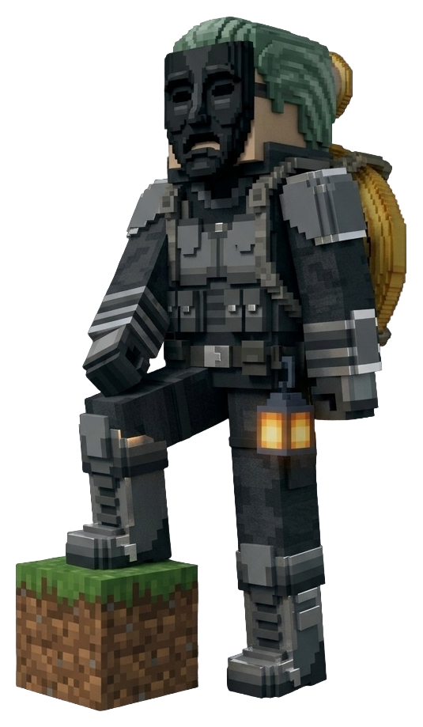

Кирка - как альпийский топорик
Кирка работает как альпийский топорик - так удобнее карабкаться по горам и льду, и выглядит она именно так, как задумано.
Набор игроков
Идёт набор игроков. Могилы с вещами, голосовой чат, эмоции, жители-стражи и своя генерация мира.

Обычная ванилла плюс детали, которых нет на типичных серверах. Всё это включим в день открытия.
Кирка работает как альпийский топорик - так удобнее карабкаться по горам и льду, и выглядит она именно так, как задумано.
Умер - не потерял. Вещи остаются в могиле, и ты всегда можешь вернуться, чтобы забрать их.
Говори с игроками прямо в игре через Simple Voice Chat. Никаких сторонних приложений и голосового в Discord.
Покажи радость, злость или удивление через EmoteCraft - один из двух модов, которые нужны для входа.
Жители выглядят как игроки и умеют защищаться. Не заходи в их деревню с плохими намерениями.
Мир генерируется по своим правилам - не по ванильным.
Цветной префикс перед ником - в TAB, в табло и в чате.
Напиши в Discord - выдадим нужный.
Не переживай - блоки сами восстановятся, и ресурсы тоже.
Подключаться пока некуда - сервер ещё не запущен. Discord остаётся единственным местом, где мы пишем новости.
Как только мы наберём достаточно игроков, в Discord появится дата открытия и адрес сервера.
Кто будет в Discord в день открытия - попадёт в первых. Перед запуском поставь два мода на клиент, подробности выдадим в Discord.
Да, всего два. EmoteCraft - эмоции, Simple Voice Chat - голос рядом с игроком. Ставятся на клиент, серверную часть мы ставим сами.
Нет, лицензия не обязательна. Можно заходить и с пиратской версии.
Нет, с Bedrock зайти не получится. Сервер только для Java.
26.2. Стандартный клиент Minecraft, из модов - только два.
Paper. Плагины свои, ванильные механики не ломаем.
Нет. Всё открыто, а защита строится на могилах и ручном сговоре.
Мы набираем тех, кому интересна спокойная ванилла: кто-то строит своё, кто-то общается с другими, кто-то исследует мир. Таких людей мы и ищем - без гриферства, спама и хамства в чате.
В Discord. Там же мы выдаём префиксы и пишем дату открытия.
Точной даты пока нет. Ориентируемся на набор игроков, чтобы открыться сразу с полным онлайном.
Новости сервера, дата открытия, адрес подключения и выдача префиксов - всё в одном месте.